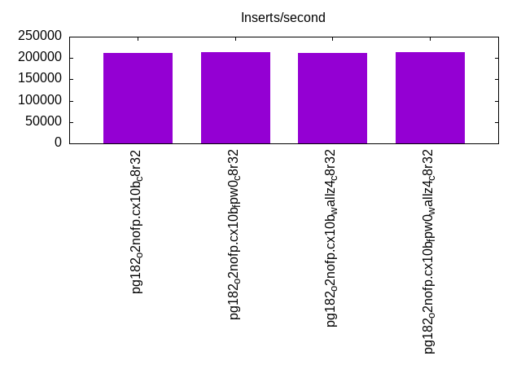
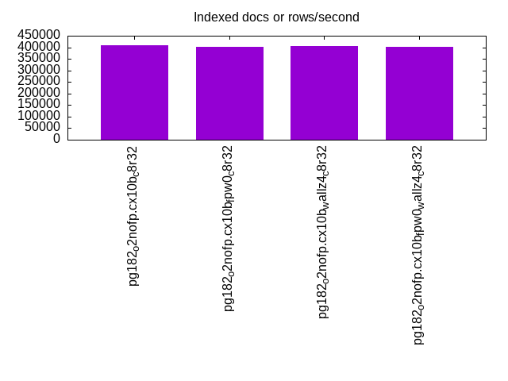
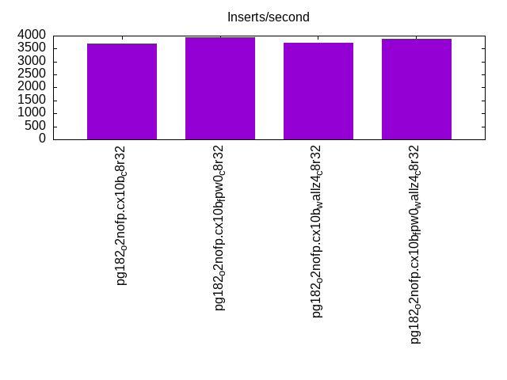
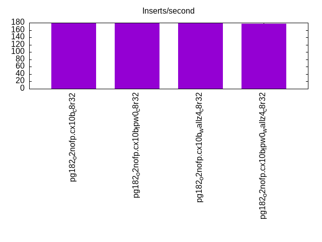
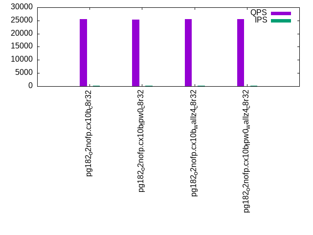
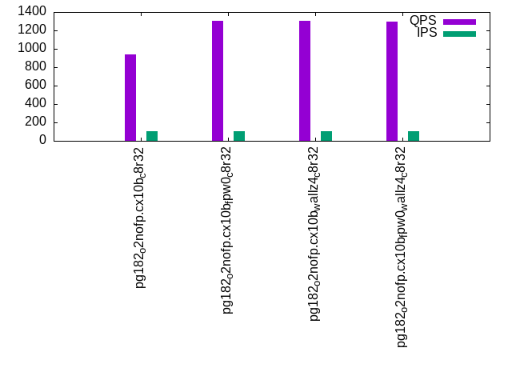
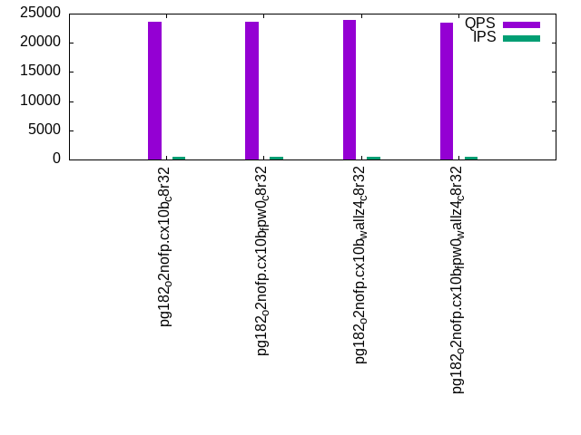
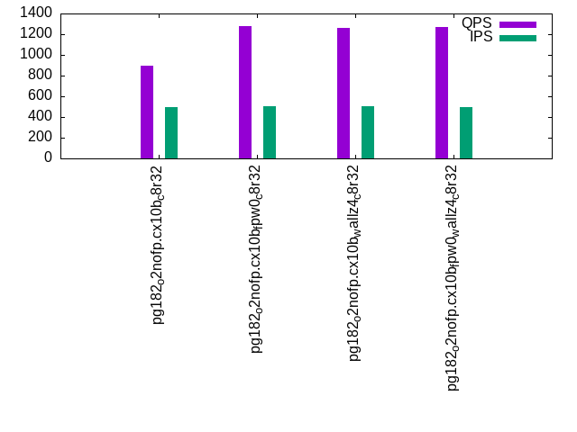
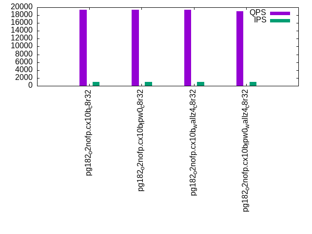
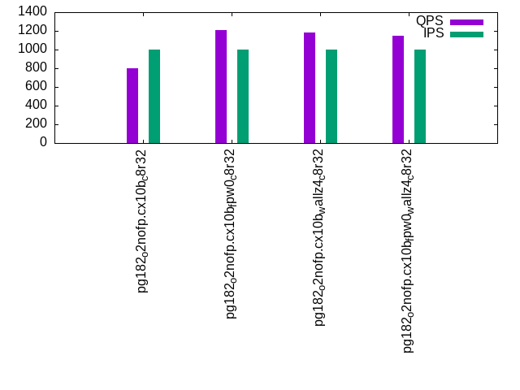

This is a report for the insert benchmark with 800M docs and 1 client(s). It is generated by scripts (bash, awk, sed) and Tufte might not be impressed. An overview of the insert benchmark is here and a short update is here. Below, by DBMS, I mean DBMS+version.config. An example is my8020.c10b40 where my means MySQL, 8020 is version 8.0.20 and c10b40 is the name for the configuration file.
The test server has 8 AMD cores, 32G RAM and an NVMe device for the database. The benchmark was run with 1 client and there were 1 or 3 connections per client (1 for queries or inserts without rate limits, 1+1 for rate limited inserts+deletes). It uses 1 table with a table per client. It loads 800M rows per table without secondary indexes, creates 3 secondary indexes per table, then inserts 4m+1m rows per table with a delete per insert to avoid growing the table. It then does 6 read+write tests for 1800s each that do queries as fast as possible with 100,100,500,500,1000,1000 inserts/s and the same for deletes/s per client concurrent with the queries. The database is IO-bound for most benchmark steps. Clients and the DBMS share one server.
The tested DBMS are:
The numbers are inserts/s for l.i0, l.i1 and l.i2, indexed docs (or rows) /s for l.x and queries/s for qr100, qp100 thru qr1000, qp1000" The values are the average rate over the entire test for inserts (IPS) and queries (QPS). The range of values for IPS and QPS is split into 3 parts: bottom 25%, middle 50%, top 25%. Values in the bottom 25% have a red background, values in the top 25% have a green background and values in the middle have no color. A gray background is used for values that can be ignored because the DBMS did not sustain the target insert rate. Red backgrounds are not used when the minimum value is within 80% of the max value.
| dbms | l.i0 | l.x | l.i1 | l.i2 | qr100 | qp100 | qr500 | qp500 | qr1000 | qp1000 |
|---|---|---|---|---|---|---|---|---|---|---|
| pg182_o2nofp.cx10b_c8r32 | 211977 | 407540 | 3707 | 178 | 25508 | 939 | 23669 | 894 | 19335 | 800 |
| pg182_o2nofp.cx10b_fpw0_c8r32 | 212879 | 402212 | 3929 | 178 | 25255 | 1304 | 23623 | 1280 | 19435 | 1206 |
| pg182_o2nofp.cx10b_wallz4_c8r32 | 212596 | 405268 | 3717 | 178 | 25555 | 1300 | 23839 | 1263 | 19372 | 1180 |
| pg182_o2nofp.cx10b_fpw0_wallz4_c8r32 | 213106 | 401002 | 3887 | 177 | 25472 | 1299 | 23510 | 1268 | 19057 | 1145 |
This table has relative throughput, throughput for the DBMS relative to the DBMS in the first line, using the absolute throughput from the previous table. Values less than 0.95 have a yellow background. Values greater than 1.05 have a blue background.
| dbms | l.i0 | l.x | l.i1 | l.i2 | qr100 | qp100 | qr500 | qp500 | qr1000 | qp1000 |
|---|---|---|---|---|---|---|---|---|---|---|
| pg182_o2nofp.cx10b_c8r32 | 1.00 | 1.00 | 1.00 | 1.00 | 1.00 | 1.00 | 1.00 | 1.00 | 1.00 | 1.00 |
| pg182_o2nofp.cx10b_fpw0_c8r32 | 1.00 | 0.99 | 1.06 | 1.00 | 0.99 | 1.39 | 1.00 | 1.43 | 1.01 | 1.51 |
| pg182_o2nofp.cx10b_wallz4_c8r32 | 1.00 | 0.99 | 1.00 | 1.00 | 1.00 | 1.38 | 1.01 | 1.41 | 1.00 | 1.48 |
| pg182_o2nofp.cx10b_fpw0_wallz4_c8r32 | 1.01 | 0.98 | 1.05 | 0.99 | 1.00 | 1.38 | 0.99 | 1.42 | 0.99 | 1.43 |
This lists the average rate of inserts/s for the tests that do inserts concurrent with queries. For such tests the query rate is listed in the table above. The read+write tests are setup so that the insert rate should match the target rate every second. Cells that are not at least 95% of the target have a red background to indicate a failure to satisfy the target.
| dbms | qr100.L1 | qp100.L2 | qr500.L3 | qp500.L4 | qr1000.L5 | qp1000.L6 |
|---|---|---|---|---|---|---|
| pg182_o2nofp.cx10b_c8r32 | 100 | 100 | 499 | 499 | 999 | 999 |
| pg182_o2nofp.cx10b_fpw0_c8r32 | 100 | 100 | 499 | 500 | 999 | 999 |
| pg182_o2nofp.cx10b_wallz4_c8r32 | 100 | 100 | 499 | 500 | 999 | 999 |
| pg182_o2nofp.cx10b_fpw0_wallz4_c8r32 | 100 | 100 | 500 | 499 | 999 | 999 |
| target | 100 | 100 | 500 | 500 | 1000 | 1000 |
l.i0: load without secondary indexes. Graphs for performance per 1-second interval are here.
Average throughput:

Insert response time histogram: each cell has the percentage of responses that take <= the time in the header and max is the max response time in seconds. For the max column values in the top 25% of the range have a red background and in the bottom 25% of the range have a green background. The red background is not used when the min value is within 80% of the max value.
| dbms | 256us | 1ms | 4ms | 16ms | 64ms | 256ms | 1s | 4s | 16s | gt | max |
|---|---|---|---|---|---|---|---|---|---|---|---|
| pg182_o2nofp.cx10b_c8r32 | 99.971 | 0.025 | 0.004 | nonzero | 0.044 | ||||||
| pg182_o2nofp.cx10b_fpw0_c8r32 | 99.976 | 0.024 | nonzero | nonzero | 0.027 | ||||||
| pg182_o2nofp.cx10b_wallz4_c8r32 | 99.967 | 0.032 | 0.001 | nonzero | 0.027 | ||||||
| pg182_o2nofp.cx10b_fpw0_wallz4_c8r32 | 99.979 | 0.021 | nonzero | nonzero | 0.028 |
Performance metrics for the DBMS listed above. Some are normalized by throughput, others are not. Legend for results is here.
ips qps rps rmbps wps wmbps rpq rkbpq wpi wkbpi csps cpups cspq cpupq dbgb1 dbgb2 rss maxop p50 p99 tag 211977 0 36 0.3 796.6 87.8 0.000 0.001 0.004 0.424 20999 20.5 0.099 8 76.5 116.6 18.5 0.044 213378 205669 pg182_o2nofp.cx10b_c8r32 212879 0 36 0.3 776.7 85.8 0.000 0.001 0.004 0.413 21101 20.4 0.099 8 76.5 116.6 19.7 0.027 214076 207172 pg182_o2nofp.cx10b_fpw0_c8r32 212596 0 37 0.3 786.5 86.5 0.000 0.001 0.004 0.416 21115 20.4 0.099 8 76.5 116.6 1.0 0.027 213971 206376 pg182_o2nofp.cx10b_wallz4_c8r32 213106 0 37 0.3 778.2 85.9 0.000 0.001 0.004 0.413 21134 20.4 0.099 8 76.5 116.6 1.0 0.028 214363 207665 pg182_o2nofp.cx10b_fpw0_wallz4_c8r32
Average values from iostat.
r/s rkB/s rrqm/s %rrqm r_await rareq-s w/s wkB/s wrqm/s %wrqm w_await wareq-s d/s dkB/s drqm/s %drqm d_await dareq-s f/s f_await aqu-sz %util 36.30 292.6 0.039 0.483 0.019 0.631 796.9 89937.5 30.51 3.012 0.338 112.9 0.095 8.175 0.000 0.000 0.135 4.890 43.78 1.642 0.362 11.75 pg182_o2nofp.cx10b_c8r32 36.46 294.2 0.007 0.206 0.010 0.666 777.0 87868.0 31.22 3.262 0.341 112.9 0.100 2.944 0.000 0.000 0.164 2.705 43.67 1.708 0.356 12.01 pg182_o2nofp.cx10b_fpw0_c8r32 36.83 296.3 0.094 0.741 0.133 3.014 786.7 88554.5 31.70 3.224 0.320 112.5 0.166 9.633 0.000 0.000 0.190 7.589 44.15 1.658 0.342 11.81 pg182_o2nofp.cx10b_wallz4_c8r32 36.87 296.5 0.000 0.000 0.116 2.861 778.5 88040.4 31.08 3.187 0.333 113.0 0.151 3.610 0.000 0.000 0.220 3.798 43.74 1.655 0.345 11.65 pg182_o2nofp.cx10b_fpw0_wallz4_c8r32
l.x: create secondary indexes.
Average throughput:

Performance metrics for the DBMS listed above. Some are normalized by throughput, others are not. Legend for results is here.
ips qps rps rmbps wps wmbps rpq rkbpq wpi wkbpi csps cpups cspq cpupq dbgb1 dbgb2 rss maxop p50 p99 tag 407540 0 1515 149.7 1255.6 151.4 0.004 0.376 0.003 0.380 1128 12.7 0.003 2 153.6 193.7 23.4 0.003 NA NA pg182_o2nofp.cx10b_c8r32 402212 0 1637 161.2 1245.0 150.8 0.004 0.410 0.003 0.384 1505 12.6 0.004 3 153.6 193.7 23.4 0.003 NA NA pg182_o2nofp.cx10b_fpw0_c8r32 405268 0 1102 136.5 1112.3 136.1 0.003 0.345 0.003 0.344 848 12.8 0.002 3 153.6 193.7 23.4 0.003 NA NA pg182_o2nofp.cx10b_wallz4_c8r32 401002 0 1223 141.2 1109.0 135.0 0.003 0.361 0.003 0.345 950 12.8 0.002 3 153.6 193.7 23.4 0.003 NA NA pg182_o2nofp.cx10b_fpw0_wallz4_c8r32
Average values from iostat.
r/s rkB/s rrqm/s %rrqm r_await rareq-s w/s wkB/s wrqm/s %wrqm w_await wareq-s d/s dkB/s drqm/s %drqm d_await dareq-s f/s f_await aqu-sz %util 1516.4 153308 0.000 0.000 0.085 94.02 1257.8 155303 25.85 1.111 0.271 124.4 1.018 22448.5 0.000 0.000 0.327 546.8 10.13 2.065 0.678 17.98 pg182_o2nofp.cx10b_c8r32 1638.1 165142 0.000 0.000 0.098 97.47 1246.8 154636 23.66 1.089 0.247 124.6 0.902 25891.6 0.000 0.000 0.345 5105.6 9.619 1.972 0.609 18.83 pg182_o2nofp.cx10b_fpw0_c8r32 1102.4 139734 0.000 0.000 0.114 108.7 1114.9 139667 19.28 0.974 0.224 125.9 1.097 22331.6 0.000 0.000 0.312 391.2 7.256 2.002 0.452 15.31 pg182_o2nofp.cx10b_wallz4_c8r32 1223.6 144625 0.000 0.000 0.104 105.2 1110.4 138448 17.99 0.963 0.225 125.0 0.949 26450.7 0.000 0.000 0.312 5360.0 7.017 1.996 0.448 15.79 pg182_o2nofp.cx10b_fpw0_wallz4_c8r32
l.i1: continue load after secondary indexes created with 50 inserts per transaction. Graphs for performance per 1-second interval are here.
Average throughput:

Insert response time histogram: each cell has the percentage of responses that take <= the time in the header and max is the max response time in seconds. For the max column values in the top 25% of the range have a red background and in the bottom 25% of the range have a green background. The red background is not used when the min value is within 80% of the max value.
| dbms | 256us | 1ms | 4ms | 16ms | 64ms | 256ms | 1s | 4s | 16s | gt | max |
|---|---|---|---|---|---|---|---|---|---|---|---|
| pg182_o2nofp.cx10b_c8r32 | 0.005 | 99.905 | 0.090 | 0.035 | |||||||
| pg182_o2nofp.cx10b_fpw0_c8r32 | 0.054 | 99.934 | 0.013 | 0.027 | |||||||
| pg182_o2nofp.cx10b_wallz4_c8r32 | 99.969 | 0.031 | 0.028 | ||||||||
| pg182_o2nofp.cx10b_fpw0_wallz4_c8r32 | 0.009 | 99.980 | 0.011 | 0.028 |
Delete response time histogram: each cell has the percentage of responses that take <= the time in the header and max is the max response time in seconds. For the max column values in the top 25% of the range have a red background and in the bottom 25% of the range have a green background. The red background is not used when the min value is within 80% of the max value.
| dbms | 256us | 1ms | 4ms | 16ms | 64ms | 256ms | 1s | 4s | 16s | gt | max |
|---|---|---|---|---|---|---|---|---|---|---|---|
| pg182_o2nofp.cx10b_c8r32 | 1.427 | 17.850 | 43.315 | 37.407 | 0.031 | ||||||
| pg182_o2nofp.cx10b_fpw0_c8r32 | 0.557 | 19.290 | 46.100 | 34.053 | 0.032 | ||||||
| pg182_o2nofp.cx10b_wallz4_c8r32 | 0.685 | 18.474 | 45.270 | 35.571 | 0.030 | ||||||
| pg182_o2nofp.cx10b_fpw0_wallz4_c8r32 | 0.003 | 0.369 | 19.734 | 44.879 | 35.016 | 0.033 |
Performance metrics for the DBMS listed above. Some are normalized by throughput, others are not. Legend for results is here.
ips qps rps rmbps wps wmbps rpq rkbpq wpi wkbpi csps cpups cspq cpupq dbgb1 dbgb2 rss maxop p50 p99 tag 3707 0 5351 44.2 4402.0 75.3 1.443 12.222 1.187 20.814 11930 15.4 3.218 332 154.3 194.3 22.9 0.035 2850 1999 pg182_o2nofp.cx10b_c8r32 3929 0 5651 44.5 4127.7 34.5 1.438 11.604 1.051 9.001 12417 15.0 3.160 305 154.3 194.3 20.9 0.027 2949 2000 pg182_o2nofp.cx10b_fpw0_c8r32 3717 0 5344 42.1 4255.5 59.2 1.438 11.600 1.145 16.302 11871 15.5 3.193 334 154.3 194.3 22.3 0.028 2850 2000 pg182_o2nofp.cx10b_wallz4_c8r32 3887 0 5595 44.1 4109.1 37.1 1.439 11.618 1.057 9.761 12305 14.9 3.165 307 154.3 194.3 20.8 0.028 2949 1950 pg182_o2nofp.cx10b_fpw0_wallz4_c8r32
Average values from iostat.
r/s rkB/s rrqm/s %rrqm r_await rareq-s w/s wkB/s wrqm/s %wrqm w_await wareq-s d/s dkB/s drqm/s %drqm d_await dareq-s f/s f_await aqu-sz %util 5311.0 44996.6 0.000 0.000 0.043 8.438 4419.7 77190.7 14.80 0.743 0.153 39.43 0.011 0.116 0.000 0.000 0.026 0.249 39.04 1.724 0.868 32.84 pg182_o2nofp.cx10b_c8r32 5600.6 45188.3 0.000 0.000 0.040 8.073 4148.0 35528.1 2.605 2.275 0.143 25.84 0.004 0.028 0.000 0.000 0.010 0.109 5.249 1.764 0.348 27.40 pg182_o2nofp.cx10b_fpw0_c8r32 5307.4 42825.1 0.000 0.000 0.042 8.073 4273.5 60675.6 4.771 0.464 0.110 32.05 0.008 0.034 0.000 0.000 0.051 0.150 23.95 1.719 0.609 29.55 pg182_o2nofp.cx10b_wallz4_c8r32 5544.6 44751.4 0.000 0.000 0.040 8.076 4129.1 38112.6 1.925 1.818 0.145 28.02 0.005 0.020 0.000 0.000 0.015 0.078 5.269 1.729 0.346 27.07 pg182_o2nofp.cx10b_fpw0_wallz4_c8r32
l.i2: continue load after secondary indexes created with 5 inserts per transaction. Graphs for performance per 1-second interval are here.
Average throughput:

Insert response time histogram: each cell has the percentage of responses that take <= the time in the header and max is the max response time in seconds. For the max column values in the top 25% of the range have a red background and in the bottom 25% of the range have a green background. The red background is not used when the min value is within 80% of the max value.
| dbms | 256us | 1ms | 4ms | 16ms | 64ms | 256ms | 1s | 4s | 16s | gt | max |
|---|---|---|---|---|---|---|---|---|---|---|---|
| pg182_o2nofp.cx10b_c8r32 | 45.443 | 54.471 | 0.086 | 0.013 | |||||||
| pg182_o2nofp.cx10b_fpw0_c8r32 | 52.560 | 47.366 | 0.073 | 0.001 | 0.023 | ||||||
| pg182_o2nofp.cx10b_wallz4_c8r32 | 16.588 | 83.272 | 0.140 | 0.012 | |||||||
| pg182_o2nofp.cx10b_fpw0_wallz4_c8r32 | 49.331 | 50.610 | 0.059 | 0.013 |
Delete response time histogram: each cell has the percentage of responses that take <= the time in the header and max is the max response time in seconds. For the max column values in the top 25% of the range have a red background and in the bottom 25% of the range have a green background. The red background is not used when the min value is within 80% of the max value.
| dbms | 256us | 1ms | 4ms | 16ms | 64ms | 256ms | 1s | 4s | 16s | gt | max |
|---|---|---|---|---|---|---|---|---|---|---|---|
| pg182_o2nofp.cx10b_c8r32 | 99.999 | 0.001 | 0.084 | ||||||||
| pg182_o2nofp.cx10b_fpw0_c8r32 | 99.999 | 0.001 | 0.082 | ||||||||
| pg182_o2nofp.cx10b_wallz4_c8r32 | 99.999 | 0.001 | 0.082 | ||||||||
| pg182_o2nofp.cx10b_fpw0_wallz4_c8r32 | 99.999 | 0.001 | 0.082 |
Performance metrics for the DBMS listed above. Some are normalized by throughput, others are not. Legend for results is here.
ips qps rps rmbps wps wmbps rpq rkbpq wpi wkbpi csps cpups cspq cpupq dbgb1 dbgb2 rss maxop p50 p99 tag 178 0 191 1.6 512.6 7.1 1.072 9.004 2.878 40.937 1143 12.8 6.416 5750 154.4 194.5 22.9 0.013 180 155 pg182_o2nofp.cx10b_c8r32 178 0 191 1.5 510.3 5.1 1.071 8.677 2.861 29.559 1138 12.7 6.381 5695 154.4 194.3 23.4 0.023 175 160 pg182_o2nofp.cx10b_fpw0_c8r32 178 0 191 1.5 511.2 6.3 1.072 8.683 2.867 36.228 1152 12.8 6.459 5743 154.4 193.1 23.4 0.012 180 160 pg182_o2nofp.cx10b_wallz4_c8r32 177 0 189 1.5 506.0 5.1 1.071 8.682 2.862 29.551 1128 12.7 6.381 5747 154.4 194.3 23.4 0.013 175 155 pg182_o2nofp.cx10b_fpw0_wallz4_c8r32
Average values from iostat.
r/s rkB/s rrqm/s %rrqm r_await rareq-s w/s wkB/s wrqm/s %wrqm w_await wareq-s d/s dkB/s drqm/s %drqm d_await dareq-s f/s f_await aqu-sz %util 191.0 1603.3 0.000 0.000 0.055 8.393 513.1 7295.6 4.581 1.316 0.091 20.09 0.002 0.156 0.000 0.000 0.005 0.384 6.288 1.706 0.052 2.888 pg182_o2nofp.cx10b_c8r32 191.0 1547.8 0.000 0.000 0.055 8.102 510.8 5277.2 2.883 1.560 0.118 10.45 0.004 29.46 0.000 0.000 0.004 11.44 5.483 1.740 0.047 2.620 pg182_o2nofp.cx10b_fpw0_c8r32 191.1 1548.0 0.000 0.000 0.057 8.102 511.6 6463.6 3.984 1.256 0.090 16.53 0.020 260.6 0.000 0.000 0.004 12.83 6.051 1.696 0.050 2.877 pg182_o2nofp.cx10b_wallz4_c8r32 189.4 1534.8 0.000 0.000 0.055 8.103 506.4 5229.2 1.741 1.191 0.113 10.47 0.004 26.30 0.000 0.000 0.005 11.04 5.272 1.731 0.046 2.579 pg182_o2nofp.cx10b_fpw0_wallz4_c8r32
qr100.L1: range queries with 100 insert/s per client. Graphs for performance per 1-second interval are here.
Average throughput:

Query response time histogram: each cell has the percentage of responses that take <= the time in the header and max is the max response time in seconds. For max values in the top 25% of the range have a red background and in the bottom 25% of the range have a green background. The red background is not used when the min value is within 80% of the max value.
| dbms | 256us | 1ms | 4ms | 16ms | 64ms | 256ms | 1s | 4s | 16s | gt | max |
|---|---|---|---|---|---|---|---|---|---|---|---|
| pg182_o2nofp.cx10b_c8r32 | 99.991 | 0.009 | nonzero | nonzero | 0.009 | ||||||
| pg182_o2nofp.cx10b_fpw0_c8r32 | 99.991 | 0.009 | nonzero | nonzero | 0.010 | ||||||
| pg182_o2nofp.cx10b_wallz4_c8r32 | 99.992 | 0.008 | nonzero | nonzero | 0.010 | ||||||
| pg182_o2nofp.cx10b_fpw0_wallz4_c8r32 | 99.990 | 0.010 | nonzero | nonzero | 0.011 |
Insert response time histogram: each cell has the percentage of responses that take <= the time in the header and max is the max response time in seconds. For max values in the top 25% of the range have a red background and in the bottom 25% of the range have a green background. The red background is not used when the min value is within 80% of the max value.
| dbms | 256us | 1ms | 4ms | 16ms | 64ms | 256ms | 1s | 4s | 16s | gt | max |
|---|---|---|---|---|---|---|---|---|---|---|---|
| pg182_o2nofp.cx10b_c8r32 | 0.028 | 99.917 | 0.056 | 0.023 | |||||||
| pg182_o2nofp.cx10b_fpw0_c8r32 | 25.111 | 74.861 | 0.028 | 0.022 | |||||||
| pg182_o2nofp.cx10b_wallz4_c8r32 | 99.972 | 0.028 | 0.024 | ||||||||
| pg182_o2nofp.cx10b_fpw0_wallz4_c8r32 | 23.389 | 76.583 | 0.028 | 0.022 |
Delete response time histogram: each cell has the percentage of responses that take <= the time in the header and max is the max response time in seconds. For max values in the top 25% of the range have a red background and in the bottom 25% of the range have a green background. The red background is not used when the min value is within 80% of the max value.
| dbms | 256us | 1ms | 4ms | 16ms | 64ms | 256ms | 1s | 4s | 16s | gt | max |
|---|---|---|---|---|---|---|---|---|---|---|---|
| pg182_o2nofp.cx10b_c8r32 | 58.500 | 41.500 | 0.003 | ||||||||
| pg182_o2nofp.cx10b_fpw0_c8r32 | 58.000 | 42.000 | 0.003 | ||||||||
| pg182_o2nofp.cx10b_wallz4_c8r32 | 57.778 | 42.222 | 0.003 | ||||||||
| pg182_o2nofp.cx10b_fpw0_wallz4_c8r32 | 58.417 | 41.583 | 0.003 |
Performance metrics for the DBMS listed above. Some are normalized by throughput, others are not. Legend for results is here.
ips qps rps rmbps wps wmbps rpq rkbpq wpi wkbpi csps cpups cspq cpupq dbgb1 dbgb2 rss maxop p50 p99 tag 100 25508 111 0.9 66.6 1.9 0.004 0.036 0.667 19.422 97550 8.6 3.824 27 154.4 192.6 23.4 0.009 25493 25208 pg182_o2nofp.cx10b_c8r32 100 25255 110 0.9 58.1 0.5 0.004 0.036 0.582 5.239 96634 8.8 3.826 28 154.4 193.8 23.4 0.010 25293 24919 pg182_o2nofp.cx10b_fpw0_c8r32 100 25555 111 0.9 61.8 1.4 0.004 0.036 0.619 14.445 97782 8.6 3.826 27 154.4 190.3 23.4 0.010 25643 24983 pg182_o2nofp.cx10b_wallz4_c8r32 100 25472 111 0.9 57.7 0.5 0.004 0.036 0.578 5.205 97415 8.7 3.824 27 154.4 193.8 23.4 0.011 25581 24901 pg182_o2nofp.cx10b_fpw0_wallz4_c8r32
Average values from iostat.
r/s rkB/s rrqm/s %rrqm r_await rareq-s w/s wkB/s wrqm/s %wrqm w_await wareq-s d/s dkB/s drqm/s %drqm d_await dareq-s f/s f_await aqu-sz %util 107.3 880.1 0.000 0.000 0.081 8.199 66.74 1941.1 1.672 5.507 0.922 61.13 0.001 0.002 0.000 0.000 0.003 0.011 2.606 2.198 0.086 1.992 pg182_o2nofp.cx10b_c8r32 107.1 873.9 0.000 0.000 0.057 8.163 58.21 524.2 1.899 13.28 1.506 11.73 0.001 9.130 0.000 0.000 0.003 45.65 2.300 2.211 0.081 1.645 pg182_o2nofp.cx10b_fpw0_c8r32 107.8 881.5 0.000 0.000 0.058 8.176 61.96 1442.6 1.562 6.664 1.153 54.54 0.001 0.002 0.000 0.000 0.000 0.011 2.452 2.077 0.079 1.701 pg182_o2nofp.cx10b_wallz4_c8r32 107.9 881.8 0.000 0.000 0.057 8.174 57.87 521.3 1.807 13.82 1.451 11.65 0.001 9.130 0.000 0.000 0.003 45.65 2.309 2.175 0.080 1.662 pg182_o2nofp.cx10b_fpw0_wallz4_c8r32
qp100.L2: point queries with 100 insert/s per client. Graphs for performance per 1-second interval are here.
Average throughput:

Query response time histogram: each cell has the percentage of responses that take <= the time in the header and max is the max response time in seconds. For max values in the top 25% of the range have a red background and in the bottom 25% of the range have a green background. The red background is not used when the min value is within 80% of the max value.
| dbms | 256us | 1ms | 4ms | 16ms | 64ms | 256ms | 1s | 4s | 16s | gt | max |
|---|---|---|---|---|---|---|---|---|---|---|---|
| pg182_o2nofp.cx10b_c8r32 | nonzero | 42.618 | 57.340 | 0.041 | nonzero | 0.019 | |||||
| pg182_o2nofp.cx10b_fpw0_c8r32 | 0.002 | 95.015 | 4.969 | 0.013 | 0.013 | ||||||
| pg182_o2nofp.cx10b_wallz4_c8r32 | 0.002 | 94.965 | 5.016 | 0.016 | 0.012 | ||||||
| pg182_o2nofp.cx10b_fpw0_wallz4_c8r32 | 0.002 | 94.871 | 5.111 | 0.015 | 0.016 |
Insert response time histogram: each cell has the percentage of responses that take <= the time in the header and max is the max response time in seconds. For max values in the top 25% of the range have a red background and in the bottom 25% of the range have a green background. The red background is not used when the min value is within 80% of the max value.
| dbms | 256us | 1ms | 4ms | 16ms | 64ms | 256ms | 1s | 4s | 16s | gt | max |
|---|---|---|---|---|---|---|---|---|---|---|---|
| pg182_o2nofp.cx10b_c8r32 | 99.944 | 0.056 | 0.024 | ||||||||
| pg182_o2nofp.cx10b_fpw0_c8r32 | 99.944 | 0.056 | 0.039 | ||||||||
| pg182_o2nofp.cx10b_wallz4_c8r32 | 99.972 | 0.028 | 0.017 | ||||||||
| pg182_o2nofp.cx10b_fpw0_wallz4_c8r32 | 99.972 | 0.028 | 0.022 |
Delete response time histogram: each cell has the percentage of responses that take <= the time in the header and max is the max response time in seconds. For max values in the top 25% of the range have a red background and in the bottom 25% of the range have a green background. The red background is not used when the min value is within 80% of the max value.
| dbms | 256us | 1ms | 4ms | 16ms | 64ms | 256ms | 1s | 4s | 16s | gt | max |
|---|---|---|---|---|---|---|---|---|---|---|---|
| pg182_o2nofp.cx10b_c8r32 | 5.583 | 94.389 | 0.028 | 0.008 | |||||||
| pg182_o2nofp.cx10b_fpw0_c8r32 | 6.889 | 93.083 | 0.028 | 0.007 | |||||||
| pg182_o2nofp.cx10b_wallz4_c8r32 | 6.306 | 93.667 | 0.028 | 0.008 | |||||||
| pg182_o2nofp.cx10b_fpw0_wallz4_c8r32 | 6.444 | 93.528 | 0.028 | 0.007 |
Performance metrics for the DBMS listed above. Some are normalized by throughput, others are not. Legend for results is here.
ips qps rps rmbps wps wmbps rpq rkbpq wpi wkbpi csps cpups cspq cpupq dbgb1 dbgb2 rss maxop p50 p99 tag 100 939 11824 92.5 355.0 4.1 12.598 100.912 3.557 42.323 26294 2.8 28.014 239 154.5 192.6 23.4 0.019 976 576 pg182_o2nofp.cx10b_c8r32 100 1304 16081 126.1 344.5 2.7 12.332 99.013 3.451 28.126 35822 3.9 27.471 239 154.5 193.7 23.4 0.013 1343 784 pg182_o2nofp.cx10b_fpw0_c8r32 100 1300 16112 126.0 355.7 3.7 12.390 99.192 3.564 37.757 35870 3.6 27.584 221 154.5 190.3 23.4 0.012 1328 816 pg182_o2nofp.cx10b_wallz4_c8r32 100 1299 16069 125.6 345.1 2.7 12.370 99.017 3.454 28.117 35775 3.6 27.540 222 154.5 193.7 23.4 0.016 1328 800 pg182_o2nofp.cx10b_fpw0_wallz4_c8r32
Average values from iostat.
r/s rkB/s rrqm/s %rrqm r_await rareq-s w/s wkB/s wrqm/s %wrqm w_await wareq-s d/s dkB/s drqm/s %drqm d_await dareq-s f/s f_await aqu-sz %util 11826.0 94728.8 0.000 0.000 0.060 8.010 354.2 4217.9 2.598 1.121 0.071 14.37 0.001 0.002 0.000 0.000 0.003 0.011 3.643 1.891 0.771 79.27 pg182_o2nofp.cx10b_c8r32 16084.0 129138 0.000 0.000 0.040 8.029 343.3 2797.6 2.534 1.150 0.067 8.214 0.002 27.38 0.000 0.000 0.004 45.65 3.080 1.992 0.686 71.47 pg182_o2nofp.cx10b_fpw0_c8r32 16115.0 129013 0.000 0.000 0.040 8.006 354.4 3758.5 2.346 0.978 0.071 11.96 0.001 0.002 0.000 0.000 0.006 0.011 3.488 1.953 0.689 73.41 pg182_o2nofp.cx10b_wallz4_c8r32 16072.2 128647 0.000 0.000 0.040 8.003 343.9 2799.3 1.712 0.807 0.072 8.206 0.003 36.51 0.000 0.000 0.005 45.65 3.059 2.006 0.686 73.05 pg182_o2nofp.cx10b_fpw0_wallz4_c8r32
qr500.L3: range queries with 500 insert/s per client. Graphs for performance per 1-second interval are here.
Average throughput:

Query response time histogram: each cell has the percentage of responses that take <= the time in the header and max is the max response time in seconds. For max values in the top 25% of the range have a red background and in the bottom 25% of the range have a green background. The red background is not used when the min value is within 80% of the max value.
| dbms | 256us | 1ms | 4ms | 16ms | 64ms | 256ms | 1s | 4s | 16s | gt | max |
|---|---|---|---|---|---|---|---|---|---|---|---|
| pg182_o2nofp.cx10b_c8r32 | 99.985 | 0.015 | nonzero | nonzero | nonzero | 0.023 | |||||
| pg182_o2nofp.cx10b_fpw0_c8r32 | 99.986 | 0.014 | nonzero | nonzero | nonzero | 0.025 | |||||
| pg182_o2nofp.cx10b_wallz4_c8r32 | 99.985 | 0.014 | nonzero | nonzero | 0.011 | ||||||
| pg182_o2nofp.cx10b_fpw0_wallz4_c8r32 | 99.985 | 0.015 | nonzero | nonzero | nonzero | 0.021 |
Insert response time histogram: each cell has the percentage of responses that take <= the time in the header and max is the max response time in seconds. For max values in the top 25% of the range have a red background and in the bottom 25% of the range have a green background. The red background is not used when the min value is within 80% of the max value.
| dbms | 256us | 1ms | 4ms | 16ms | 64ms | 256ms | 1s | 4s | 16s | gt | max |
|---|---|---|---|---|---|---|---|---|---|---|---|
| pg182_o2nofp.cx10b_c8r32 | 99.889 | 0.111 | 0.019 | ||||||||
| pg182_o2nofp.cx10b_fpw0_c8r32 | 100.000 | 0.015 | |||||||||
| pg182_o2nofp.cx10b_wallz4_c8r32 | 99.933 | 0.067 | 0.023 | ||||||||
| pg182_o2nofp.cx10b_fpw0_wallz4_c8r32 | 100.000 | 0.015 |
Delete response time histogram: each cell has the percentage of responses that take <= the time in the header and max is the max response time in seconds. For max values in the top 25% of the range have a red background and in the bottom 25% of the range have a green background. The red background is not used when the min value is within 80% of the max value.
| dbms | 256us | 1ms | 4ms | 16ms | 64ms | 256ms | 1s | 4s | 16s | gt | max |
|---|---|---|---|---|---|---|---|---|---|---|---|
| pg182_o2nofp.cx10b_c8r32 | 53.522 | 46.478 | 0.013 | ||||||||
| pg182_o2nofp.cx10b_fpw0_c8r32 | 53.983 | 46.017 | 0.012 | ||||||||
| pg182_o2nofp.cx10b_wallz4_c8r32 | 52.650 | 47.350 | 0.012 | ||||||||
| pg182_o2nofp.cx10b_fpw0_wallz4_c8r32 | 52.933 | 47.067 | 0.012 |
Performance metrics for the DBMS listed above. Some are normalized by throughput, others are not. Legend for results is here.
ips qps rps rmbps wps wmbps rpq rkbpq wpi wkbpi csps cpups cspq cpupq dbgb1 dbgb2 rss maxop p50 p99 tag 499 23669 872 6.9 342.8 9.3 0.037 0.301 0.686 19.078 92180 9.8 3.895 33 154.5 190.2 23.4 0.023 23752 22637 pg182_o2nofp.cx10b_c8r32 499 23623 878 7.0 288.8 2.8 0.037 0.302 0.578 5.780 91986 9.7 3.894 33 154.5 193.7 23.4 0.025 23661 22318 pg182_o2nofp.cx10b_fpw0_c8r32 499 23839 877 7.0 318.2 7.0 0.037 0.299 0.637 14.399 92831 9.8 3.894 33 154.5 188.7 23.4 0.011 23883 22574 pg182_o2nofp.cx10b_wallz4_c8r32 500 23510 878 7.0 287.7 2.8 0.037 0.304 0.576 5.760 91504 9.8 3.892 33 154.5 193.7 23.4 0.021 23527 22365 pg182_o2nofp.cx10b_fpw0_wallz4_c8r32
Average values from iostat.
r/s rkB/s rrqm/s %rrqm r_await rareq-s w/s wkB/s wrqm/s %wrqm w_await wareq-s d/s dkB/s drqm/s %drqm d_await dareq-s f/s f_await aqu-sz %util 862.5 7011.7 0.000 0.000 0.070 8.131 343.3 9529.7 3.077 2.115 0.278 65.23 0.097 1460.5 0.000 0.000 0.004 42.48 7.430 1.714 0.113 7.231 pg182_o2nofp.cx10b_c8r32 868.0 7040.5 0.000 0.000 0.040 8.112 289.4 2893.0 1.736 7.188 0.686 24.41 0.006 54.87 0.000 0.000 0.005 74.25 2.573 1.971 0.064 4.693 pg182_o2nofp.cx10b_fpw0_c8r32 867.4 7038.2 0.000 0.000 0.050 8.113 318.8 7196.2 2.440 2.464 0.377 63.05 0.068 976.8 0.000 0.000 0.008 40.73 5.728 1.759 0.088 5.345 pg182_o2nofp.cx10b_wallz4_c8r32 867.6 7028.8 0.000 0.000 0.040 8.102 288.3 2883.8 1.352 6.727 0.681 23.91 0.005 36.63 0.000 0.000 0.001 22.90 2.569 1.967 0.064 4.692 pg182_o2nofp.cx10b_fpw0_wallz4_c8r32
qp500.L4: point queries with 500 insert/s per client. Graphs for performance per 1-second interval are here.
Average throughput:

Query response time histogram: each cell has the percentage of responses that take <= the time in the header and max is the max response time in seconds. For max values in the top 25% of the range have a red background and in the bottom 25% of the range have a green background. The red background is not used when the min value is within 80% of the max value.
| dbms | 256us | 1ms | 4ms | 16ms | 64ms | 256ms | 1s | 4s | 16s | gt | max |
|---|---|---|---|---|---|---|---|---|---|---|---|
| pg182_o2nofp.cx10b_c8r32 | nonzero | 33.346 | 66.541 | 0.112 | nonzero | 0.021 | |||||
| pg182_o2nofp.cx10b_fpw0_c8r32 | 0.001 | 95.128 | 4.856 | 0.014 | 0.014 | ||||||
| pg182_o2nofp.cx10b_wallz4_c8r32 | 0.002 | 94.418 | 5.558 | 0.023 | 0.013 | ||||||
| pg182_o2nofp.cx10b_fpw0_wallz4_c8r32 | 0.002 | 94.667 | 5.312 | 0.020 | nonzero | 0.020 |
Insert response time histogram: each cell has the percentage of responses that take <= the time in the header and max is the max response time in seconds. For max values in the top 25% of the range have a red background and in the bottom 25% of the range have a green background. The red background is not used when the min value is within 80% of the max value.
| dbms | 256us | 1ms | 4ms | 16ms | 64ms | 256ms | 1s | 4s | 16s | gt | max |
|---|---|---|---|---|---|---|---|---|---|---|---|
| pg182_o2nofp.cx10b_c8r32 | 99.783 | 0.217 | 0.064 | ||||||||
| pg182_o2nofp.cx10b_fpw0_c8r32 | 100.000 | 0.012 | |||||||||
| pg182_o2nofp.cx10b_wallz4_c8r32 | 99.978 | 0.022 | 0.020 | ||||||||
| pg182_o2nofp.cx10b_fpw0_wallz4_c8r32 | 100.000 | 0.015 |
Delete response time histogram: each cell has the percentage of responses that take <= the time in the header and max is the max response time in seconds. For max values in the top 25% of the range have a red background and in the bottom 25% of the range have a green background. The red background is not used when the min value is within 80% of the max value.
| dbms | 256us | 1ms | 4ms | 16ms | 64ms | 256ms | 1s | 4s | 16s | gt | max |
|---|---|---|---|---|---|---|---|---|---|---|---|
| pg182_o2nofp.cx10b_c8r32 | 99.911 | 0.089 | 0.036 | ||||||||
| pg182_o2nofp.cx10b_fpw0_c8r32 | 99.922 | 0.078 | 0.035 | ||||||||
| pg182_o2nofp.cx10b_wallz4_c8r32 | 99.900 | 0.100 | 0.035 | ||||||||
| pg182_o2nofp.cx10b_fpw0_wallz4_c8r32 | 99.939 | 0.061 | 0.036 |
Performance metrics for the DBMS listed above. Some are normalized by throughput, others are not. Legend for results is here.
ips qps rps rmbps wps wmbps rpq rkbpq wpi wkbpi csps cpups cspq cpupq dbgb1 dbgb2 rss maxop p50 p99 tag 499 894 12260 96.2 1597.4 18.6 13.708 110.144 3.199 38.175 27092 4.8 30.290 429 154.6 188.4 23.4 0.021 928 656 pg182_o2nofp.cx10b_c8r32 500 1280 16720 131.0 1565.0 12.6 13.064 104.784 3.132 25.768 37048 5.0 28.948 313 154.6 193.5 23.4 0.014 1296 991 pg182_o2nofp.cx10b_fpw0_c8r32 500 1263 16644 130.2 1608.8 16.7 13.182 105.584 3.220 34.232 36864 5.3 29.197 336 154.6 185.6 23.4 0.013 1280 960 pg182_o2nofp.cx10b_wallz4_c8r32 499 1268 16708 130.7 1564.2 12.6 13.172 105.513 3.132 25.768 36986 4.9 29.160 309 154.6 193.5 23.4 0.020 1296 976 pg182_o2nofp.cx10b_fpw0_wallz4_c8r32
Average values from iostat.
r/s rkB/s rrqm/s %rrqm r_await rareq-s w/s wkB/s wrqm/s %wrqm w_await wareq-s d/s dkB/s drqm/s %drqm d_await dareq-s f/s f_await aqu-sz %util 12264.5 98546.0 0.000 0.000 0.060 8.035 1588.7 18995.8 4.462 0.364 0.058 13.35 0.071 1113.6 0.000 0.000 0.005 89.83 9.866 1.779 0.884 79.21 pg182_o2nofp.cx10b_c8r32 16723.3 134133 0.000 0.000 0.040 8.021 1553.1 12781.0 2.732 0.248 0.039 8.319 0.011 155.2 0.000 0.000 0.005 43.11 4.726 1.890 0.754 73.57 pg182_o2nofp.cx10b_fpw0_c8r32 16647.1 133334 0.000 0.000 0.040 8.010 1594.8 16994.5 4.048 0.320 0.045 11.68 0.124 1889.4 0.000 0.000 0.007 88.19 7.599 1.828 0.776 73.46 pg182_o2nofp.cx10b_wallz4_c8r32 16710.8 133857 0.000 0.000 0.040 8.010 1552.0 12770.7 1.858 0.169 0.037 8.318 0.012 173.4 0.000 0.000 0.008 86.72 4.731 1.962 0.752 74.77 pg182_o2nofp.cx10b_fpw0_wallz4_c8r32
qr1000.L5: range queries with 1000 insert/s per client. Graphs for performance per 1-second interval are here.
Average throughput:

Query response time histogram: each cell has the percentage of responses that take <= the time in the header and max is the max response time in seconds. For max values in the top 25% of the range have a red background and in the bottom 25% of the range have a green background. The red background is not used when the min value is within 80% of the max value.
| dbms | 256us | 1ms | 4ms | 16ms | 64ms | 256ms | 1s | 4s | 16s | gt | max |
|---|---|---|---|---|---|---|---|---|---|---|---|
| pg182_o2nofp.cx10b_c8r32 | 99.960 | 0.037 | 0.002 | nonzero | nonzero | nonzero | 0.084 | ||||
| pg182_o2nofp.cx10b_fpw0_c8r32 | 99.966 | 0.032 | 0.002 | nonzero | nonzero | nonzero | 0.077 | ||||
| pg182_o2nofp.cx10b_wallz4_c8r32 | 99.961 | 0.036 | 0.002 | nonzero | nonzero | nonzero | 0.078 | ||||
| pg182_o2nofp.cx10b_fpw0_wallz4_c8r32 | 99.960 | 0.038 | 0.002 | nonzero | nonzero | nonzero | 0.081 |
Insert response time histogram: each cell has the percentage of responses that take <= the time in the header and max is the max response time in seconds. For max values in the top 25% of the range have a red background and in the bottom 25% of the range have a green background. The red background is not used when the min value is within 80% of the max value.
| dbms | 256us | 1ms | 4ms | 16ms | 64ms | 256ms | 1s | 4s | 16s | gt | max |
|---|---|---|---|---|---|---|---|---|---|---|---|
| pg182_o2nofp.cx10b_c8r32 | 0.017 | 99.958 | 0.025 | 0.020 | |||||||
| pg182_o2nofp.cx10b_fpw0_c8r32 | 1.533 | 98.464 | 0.003 | 0.016 | |||||||
| pg182_o2nofp.cx10b_wallz4_c8r32 | 99.975 | 0.025 | 0.023 | ||||||||
| pg182_o2nofp.cx10b_fpw0_wallz4_c8r32 | 1.328 | 98.669 | 0.003 | 0.018 |
Delete response time histogram: each cell has the percentage of responses that take <= the time in the header and max is the max response time in seconds. For max values in the top 25% of the range have a red background and in the bottom 25% of the range have a green background. The red background is not used when the min value is within 80% of the max value.
| dbms | 256us | 1ms | 4ms | 16ms | 64ms | 256ms | 1s | 4s | 16s | gt | max |
|---|---|---|---|---|---|---|---|---|---|---|---|
| pg182_o2nofp.cx10b_c8r32 | 17.914 | 82.086 | 0.054 | ||||||||
| pg182_o2nofp.cx10b_fpw0_c8r32 | 18.575 | 81.425 | 0.052 | ||||||||
| pg182_o2nofp.cx10b_wallz4_c8r32 | 18.292 | 81.708 | 0.053 | ||||||||
| pg182_o2nofp.cx10b_fpw0_wallz4_c8r32 | 20.522 | 79.478 | 0.053 |
Performance metrics for the DBMS listed above. Some are normalized by throughput, others are not. Legend for results is here.
ips qps rps rmbps wps wmbps rpq rkbpq wpi wkbpi csps cpups cspq cpupq dbgb1 dbgb2 rss maxop p50 p99 tag 999 19335 1499 12.0 925.4 19.0 0.078 0.638 0.927 19.520 77075 15.8 3.986 65 154.8 187.5 23.4 0.084 19356 17725 pg182_o2nofp.cx10b_c8r32 999 19435 1509 12.1 784.3 7.1 0.078 0.635 0.785 7.307 77372 15.5 3.981 64 154.8 193.3 23.4 0.077 19468 17913 pg182_o2nofp.cx10b_fpw0_c8r32 999 19372 1509 12.1 859.9 14.8 0.078 0.637 0.860 15.123 77179 15.9 3.984 66 154.8 184.2 23.4 0.078 19402 17612 pg182_o2nofp.cx10b_wallz4_c8r32 999 19057 1510 12.1 786.8 7.1 0.079 0.648 0.788 7.330 75975 15.4 3.987 65 154.8 193.3 23.4 0.081 19084 17310 pg182_o2nofp.cx10b_fpw0_wallz4_c8r32
Average values from iostat.
r/s rkB/s rrqm/s %rrqm r_await rareq-s w/s wkB/s wrqm/s %wrqm w_await wareq-s d/s dkB/s drqm/s %drqm d_await dareq-s f/s f_await aqu-sz %util 1487.9 12138.7 0.000 0.000 0.060 8.162 925.8 19482.2 5.225 0.826 0.145 34.47 0.043 593.4 0.000 0.000 0.004 39.05 13.48 1.695 0.211 11.47 pg182_o2nofp.cx10b_c8r32 1498.1 12166.2 0.000 0.000 0.040 8.124 785.3 7312.7 2.481 1.828 0.156 12.70 0.018 246.6 0.000 0.000 0.004 38.53 4.252 1.914 0.115 7.991 pg182_o2nofp.cx10b_fpw0_c8r32 1498.3 12162.7 0.000 0.000 0.050 8.121 860.8 15116.1 4.041 0.911 0.145 33.20 0.062 885.5 0.000 0.000 0.005 40.26 9.935 1.762 0.160 9.209 pg182_o2nofp.cx10b_wallz4_c8r32 1499.2 12166.5 0.000 0.000 0.040 8.119 787.6 7330.1 1.630 1.744 0.207 14.97 0.018 237.4 0.000 0.000 0.001 38.31 4.239 1.877 0.111 7.976 pg182_o2nofp.cx10b_fpw0_wallz4_c8r32
qp1000.L6: point queries with 1000 insert/s per client. Graphs for performance per 1-second interval are here.
Average throughput:

Query response time histogram: each cell has the percentage of responses that take <= the time in the header and max is the max response time in seconds. For max values in the top 25% of the range have a red background and in the bottom 25% of the range have a green background. The red background is not used when the min value is within 80% of the max value.
| dbms | 256us | 1ms | 4ms | 16ms | 64ms | 256ms | 1s | 4s | 16s | gt | max |
|---|---|---|---|---|---|---|---|---|---|---|---|
| pg182_o2nofp.cx10b_c8r32 | nonzero | 16.926 | 82.868 | 0.206 | nonzero | 0.016 | |||||
| pg182_o2nofp.cx10b_fpw0_c8r32 | 0.001 | 90.385 | 9.599 | 0.015 | 0.013 | ||||||
| pg182_o2nofp.cx10b_wallz4_c8r32 | 0.001 | 88.821 | 11.149 | 0.030 | 0.014 | ||||||
| pg182_o2nofp.cx10b_fpw0_wallz4_c8r32 | 0.001 | 85.801 | 14.124 | 0.074 | nonzero | nonzero | 0.379 |
Insert response time histogram: each cell has the percentage of responses that take <= the time in the header and max is the max response time in seconds. For max values in the top 25% of the range have a red background and in the bottom 25% of the range have a green background. The red background is not used when the min value is within 80% of the max value.
| dbms | 256us | 1ms | 4ms | 16ms | 64ms | 256ms | 1s | 4s | 16s | gt | max |
|---|---|---|---|---|---|---|---|---|---|---|---|
| pg182_o2nofp.cx10b_c8r32 | 99.900 | 0.100 | 0.024 | ||||||||
| pg182_o2nofp.cx10b_fpw0_c8r32 | 0.003 | 99.994 | 0.003 | 0.016 | |||||||
| pg182_o2nofp.cx10b_wallz4_c8r32 | 99.972 | 0.028 | 0.024 | ||||||||
| pg182_o2nofp.cx10b_fpw0_wallz4_c8r32 | 0.008 | 97.614 | 2.378 | 0.050 |
Delete response time histogram: each cell has the percentage of responses that take <= the time in the header and max is the max response time in seconds. For max values in the top 25% of the range have a red background and in the bottom 25% of the range have a green background. The red background is not used when the min value is within 80% of the max value.
| dbms | 256us | 1ms | 4ms | 16ms | 64ms | 256ms | 1s | 4s | 16s | gt | max |
|---|---|---|---|---|---|---|---|---|---|---|---|
| pg182_o2nofp.cx10b_c8r32 | 99.997 | 0.003 | 0.085 | ||||||||
| pg182_o2nofp.cx10b_fpw0_c8r32 | 99.997 | 0.003 | 0.084 | ||||||||
| pg182_o2nofp.cx10b_wallz4_c8r32 | 99.997 | 0.003 | 0.085 | ||||||||
| pg182_o2nofp.cx10b_fpw0_wallz4_c8r32 | 99.997 | 0.003 | 0.084 |
Performance metrics for the DBMS listed above. Some are normalized by throughput, others are not. Legend for results is here.
ips qps rps rmbps wps wmbps rpq rkbpq wpi wkbpi csps cpups cspq cpupq dbgb1 dbgb2 rss maxop p50 p99 tag 999 800 12405 97.5 2820.0 34.6 15.510 124.895 2.823 35.467 27262 12.7 34.085 1270 155.0 190.7 23.4 0.016 816 544 pg182_o2nofp.cx10b_c8r32 999 1206 17214 134.8 2806.7 22.6 14.276 114.494 2.808 23.204 37907 12.9 31.437 856 155.0 192.8 23.4 0.013 1232 800 pg182_o2nofp.cx10b_fpw0_c8r32 999 1180 17026 133.2 2857.3 29.8 14.425 115.549 2.859 30.491 37492 13.4 31.765 908 155.0 183.9 23.4 0.014 1200 768 pg182_o2nofp.cx10b_wallz4_c8r32 999 1145 16597 129.9 2759.0 22.3 14.492 116.147 2.762 22.827 37256 13.4 32.530 936 155.0 192.9 23.4 0.379 1216 416 pg182_o2nofp.cx10b_fpw0_wallz4_c8r32
Average values from iostat.
r/s rkB/s rrqm/s %rrqm r_await rareq-s w/s wkB/s wrqm/s %wrqm w_await wareq-s d/s dkB/s drqm/s %drqm d_await dareq-s f/s f_await aqu-sz %util 12408.9 99921.9 0.000 0.000 0.061 8.052 2800.5 35275.9 8.378 0.374 0.060 13.68 0.002 0.096 0.000 0.000 0.006 0.245 13.99 1.665 0.959 75.35 pg182_o2nofp.cx10b_c8r32 17220.2 138110 0.000 0.000 0.040 8.020 2781.3 22987.0 2.738 0.127 0.028 8.334 0.026 383.4 0.000 0.000 0.008 85.41 5.252 1.767 0.801 72.26 pg182_o2nofp.cx10b_fpw0_c8r32 17032.1 136435 0.000 0.000 0.040 8.011 2829.8 30255.2 4.707 0.198 0.041 11.36 0.022 310.4 0.000 0.000 0.004 40.86 10.33 1.716 0.849 72.31 pg182_o2nofp.cx10b_wallz4_c8r32 16601.8 133059 0.115 0.001 0.040 8.016 2733.1 22592.5 1.956 0.095 0.028 8.344 0.032 383.5 0.000 0.000 0.019 39.22 5.259 1.749 0.775 69.92 pg182_o2nofp.cx10b_fpw0_wallz4_c8r32
l.i0: load without secondary indexes
Performance metrics for all DBMS, not just the ones listed above. Some are normalized by throughput, others are not. Legend for results is here.
ips qps rps rmbps wps wmbps rpq rkbpq wpi wkbpi csps cpups cspq cpupq dbgb1 dbgb2 rss maxop p50 p99 tag 211977 0 36 0.3 796.6 87.8 0.000 0.001 0.004 0.424 20999 20.5 0.099 8 76.5 116.6 18.5 0.044 213378 205669 pg182_o2nofp.cx10b_c8r32 212879 0 36 0.3 776.7 85.8 0.000 0.001 0.004 0.413 21101 20.4 0.099 8 76.5 116.6 19.7 0.027 214076 207172 pg182_o2nofp.cx10b_fpw0_c8r32 212596 0 37 0.3 786.5 86.5 0.000 0.001 0.004 0.416 21115 20.4 0.099 8 76.5 116.6 1.0 0.027 213971 206376 pg182_o2nofp.cx10b_wallz4_c8r32 213106 0 37 0.3 778.2 85.9 0.000 0.001 0.004 0.413 21134 20.4 0.099 8 76.5 116.6 1.0 0.028 214363 207665 pg182_o2nofp.cx10b_fpw0_wallz4_c8r32
l.x: create secondary indexes
Performance metrics for all DBMS, not just the ones listed above. Some are normalized by throughput, others are not. Legend for results is here.
ips qps rps rmbps wps wmbps rpq rkbpq wpi wkbpi csps cpups cspq cpupq dbgb1 dbgb2 rss maxop p50 p99 tag 407540 0 1515 149.7 1255.6 151.4 0.004 0.376 0.003 0.380 1128 12.7 0.003 2 153.6 193.7 23.4 0.003 NA NA pg182_o2nofp.cx10b_c8r32 402212 0 1637 161.2 1245.0 150.8 0.004 0.410 0.003 0.384 1505 12.6 0.004 3 153.6 193.7 23.4 0.003 NA NA pg182_o2nofp.cx10b_fpw0_c8r32 405268 0 1102 136.5 1112.3 136.1 0.003 0.345 0.003 0.344 848 12.8 0.002 3 153.6 193.7 23.4 0.003 NA NA pg182_o2nofp.cx10b_wallz4_c8r32 401002 0 1223 141.2 1109.0 135.0 0.003 0.361 0.003 0.345 950 12.8 0.002 3 153.6 193.7 23.4 0.003 NA NA pg182_o2nofp.cx10b_fpw0_wallz4_c8r32
l.i1: continue load after secondary indexes created with 50 inserts per transaction
Performance metrics for all DBMS, not just the ones listed above. Some are normalized by throughput, others are not. Legend for results is here.
ips qps rps rmbps wps wmbps rpq rkbpq wpi wkbpi csps cpups cspq cpupq dbgb1 dbgb2 rss maxop p50 p99 tag 3707 0 5351 44.2 4402.0 75.3 1.443 12.222 1.187 20.814 11930 15.4 3.218 332 154.3 194.3 22.9 0.035 2850 1999 pg182_o2nofp.cx10b_c8r32 3929 0 5651 44.5 4127.7 34.5 1.438 11.604 1.051 9.001 12417 15.0 3.160 305 154.3 194.3 20.9 0.027 2949 2000 pg182_o2nofp.cx10b_fpw0_c8r32 3717 0 5344 42.1 4255.5 59.2 1.438 11.600 1.145 16.302 11871 15.5 3.193 334 154.3 194.3 22.3 0.028 2850 2000 pg182_o2nofp.cx10b_wallz4_c8r32 3887 0 5595 44.1 4109.1 37.1 1.439 11.618 1.057 9.761 12305 14.9 3.165 307 154.3 194.3 20.8 0.028 2949 1950 pg182_o2nofp.cx10b_fpw0_wallz4_c8r32
l.i2: continue load after secondary indexes created with 5 inserts per transaction
Performance metrics for all DBMS, not just the ones listed above. Some are normalized by throughput, others are not. Legend for results is here.
ips qps rps rmbps wps wmbps rpq rkbpq wpi wkbpi csps cpups cspq cpupq dbgb1 dbgb2 rss maxop p50 p99 tag 178 0 191 1.6 512.6 7.1 1.072 9.004 2.878 40.937 1143 12.8 6.416 5750 154.4 194.5 22.9 0.013 180 155 pg182_o2nofp.cx10b_c8r32 178 0 191 1.5 510.3 5.1 1.071 8.677 2.861 29.559 1138 12.7 6.381 5695 154.4 194.3 23.4 0.023 175 160 pg182_o2nofp.cx10b_fpw0_c8r32 178 0 191 1.5 511.2 6.3 1.072 8.683 2.867 36.228 1152 12.8 6.459 5743 154.4 193.1 23.4 0.012 180 160 pg182_o2nofp.cx10b_wallz4_c8r32 177 0 189 1.5 506.0 5.1 1.071 8.682 2.862 29.551 1128 12.7 6.381 5747 154.4 194.3 23.4 0.013 175 155 pg182_o2nofp.cx10b_fpw0_wallz4_c8r32
qr100.L1: range queries with 100 insert/s per client
Performance metrics for all DBMS, not just the ones listed above. Some are normalized by throughput, others are not. Legend for results is here.
ips qps rps rmbps wps wmbps rpq rkbpq wpi wkbpi csps cpups cspq cpupq dbgb1 dbgb2 rss maxop p50 p99 tag 100 25508 111 0.9 66.6 1.9 0.004 0.036 0.667 19.422 97550 8.6 3.824 27 154.4 192.6 23.4 0.009 25493 25208 pg182_o2nofp.cx10b_c8r32 100 25255 110 0.9 58.1 0.5 0.004 0.036 0.582 5.239 96634 8.8 3.826 28 154.4 193.8 23.4 0.010 25293 24919 pg182_o2nofp.cx10b_fpw0_c8r32 100 25555 111 0.9 61.8 1.4 0.004 0.036 0.619 14.445 97782 8.6 3.826 27 154.4 190.3 23.4 0.010 25643 24983 pg182_o2nofp.cx10b_wallz4_c8r32 100 25472 111 0.9 57.7 0.5 0.004 0.036 0.578 5.205 97415 8.7 3.824 27 154.4 193.8 23.4 0.011 25581 24901 pg182_o2nofp.cx10b_fpw0_wallz4_c8r32
qp100.L2: point queries with 100 insert/s per client
Performance metrics for all DBMS, not just the ones listed above. Some are normalized by throughput, others are not. Legend for results is here.
ips qps rps rmbps wps wmbps rpq rkbpq wpi wkbpi csps cpups cspq cpupq dbgb1 dbgb2 rss maxop p50 p99 tag 100 939 11824 92.5 355.0 4.1 12.598 100.912 3.557 42.323 26294 2.8 28.014 239 154.5 192.6 23.4 0.019 976 576 pg182_o2nofp.cx10b_c8r32 100 1304 16081 126.1 344.5 2.7 12.332 99.013 3.451 28.126 35822 3.9 27.471 239 154.5 193.7 23.4 0.013 1343 784 pg182_o2nofp.cx10b_fpw0_c8r32 100 1300 16112 126.0 355.7 3.7 12.390 99.192 3.564 37.757 35870 3.6 27.584 221 154.5 190.3 23.4 0.012 1328 816 pg182_o2nofp.cx10b_wallz4_c8r32 100 1299 16069 125.6 345.1 2.7 12.370 99.017 3.454 28.117 35775 3.6 27.540 222 154.5 193.7 23.4 0.016 1328 800 pg182_o2nofp.cx10b_fpw0_wallz4_c8r32
qr500.L3: range queries with 500 insert/s per client
Performance metrics for all DBMS, not just the ones listed above. Some are normalized by throughput, others are not. Legend for results is here.
ips qps rps rmbps wps wmbps rpq rkbpq wpi wkbpi csps cpups cspq cpupq dbgb1 dbgb2 rss maxop p50 p99 tag 499 23669 872 6.9 342.8 9.3 0.037 0.301 0.686 19.078 92180 9.8 3.895 33 154.5 190.2 23.4 0.023 23752 22637 pg182_o2nofp.cx10b_c8r32 499 23623 878 7.0 288.8 2.8 0.037 0.302 0.578 5.780 91986 9.7 3.894 33 154.5 193.7 23.4 0.025 23661 22318 pg182_o2nofp.cx10b_fpw0_c8r32 499 23839 877 7.0 318.2 7.0 0.037 0.299 0.637 14.399 92831 9.8 3.894 33 154.5 188.7 23.4 0.011 23883 22574 pg182_o2nofp.cx10b_wallz4_c8r32 500 23510 878 7.0 287.7 2.8 0.037 0.304 0.576 5.760 91504 9.8 3.892 33 154.5 193.7 23.4 0.021 23527 22365 pg182_o2nofp.cx10b_fpw0_wallz4_c8r32
qp500.L4: point queries with 500 insert/s per client
Performance metrics for all DBMS, not just the ones listed above. Some are normalized by throughput, others are not. Legend for results is here.
ips qps rps rmbps wps wmbps rpq rkbpq wpi wkbpi csps cpups cspq cpupq dbgb1 dbgb2 rss maxop p50 p99 tag 499 894 12260 96.2 1597.4 18.6 13.708 110.144 3.199 38.175 27092 4.8 30.290 429 154.6 188.4 23.4 0.021 928 656 pg182_o2nofp.cx10b_c8r32 500 1280 16720 131.0 1565.0 12.6 13.064 104.784 3.132 25.768 37048 5.0 28.948 313 154.6 193.5 23.4 0.014 1296 991 pg182_o2nofp.cx10b_fpw0_c8r32 500 1263 16644 130.2 1608.8 16.7 13.182 105.584 3.220 34.232 36864 5.3 29.197 336 154.6 185.6 23.4 0.013 1280 960 pg182_o2nofp.cx10b_wallz4_c8r32 499 1268 16708 130.7 1564.2 12.6 13.172 105.513 3.132 25.768 36986 4.9 29.160 309 154.6 193.5 23.4 0.020 1296 976 pg182_o2nofp.cx10b_fpw0_wallz4_c8r32
qr1000.L5: range queries with 1000 insert/s per client
Performance metrics for all DBMS, not just the ones listed above. Some are normalized by throughput, others are not. Legend for results is here.
ips qps rps rmbps wps wmbps rpq rkbpq wpi wkbpi csps cpups cspq cpupq dbgb1 dbgb2 rss maxop p50 p99 tag 999 19335 1499 12.0 925.4 19.0 0.078 0.638 0.927 19.520 77075 15.8 3.986 65 154.8 187.5 23.4 0.084 19356 17725 pg182_o2nofp.cx10b_c8r32 999 19435 1509 12.1 784.3 7.1 0.078 0.635 0.785 7.307 77372 15.5 3.981 64 154.8 193.3 23.4 0.077 19468 17913 pg182_o2nofp.cx10b_fpw0_c8r32 999 19372 1509 12.1 859.9 14.8 0.078 0.637 0.860 15.123 77179 15.9 3.984 66 154.8 184.2 23.4 0.078 19402 17612 pg182_o2nofp.cx10b_wallz4_c8r32 999 19057 1510 12.1 786.8 7.1 0.079 0.648 0.788 7.330 75975 15.4 3.987 65 154.8 193.3 23.4 0.081 19084 17310 pg182_o2nofp.cx10b_fpw0_wallz4_c8r32
qp1000.L6: point queries with 1000 insert/s per client
Performance metrics for all DBMS, not just the ones listed above. Some are normalized by throughput, others are not. Legend for results is here.
ips qps rps rmbps wps wmbps rpq rkbpq wpi wkbpi csps cpups cspq cpupq dbgb1 dbgb2 rss maxop p50 p99 tag 999 800 12405 97.5 2820.0 34.6 15.510 124.895 2.823 35.467 27262 12.7 34.085 1270 155.0 190.7 23.4 0.016 816 544 pg182_o2nofp.cx10b_c8r32 999 1206 17214 134.8 2806.7 22.6 14.276 114.494 2.808 23.204 37907 12.9 31.437 856 155.0 192.8 23.4 0.013 1232 800 pg182_o2nofp.cx10b_fpw0_c8r32 999 1180 17026 133.2 2857.3 29.8 14.425 115.549 2.859 30.491 37492 13.4 31.765 908 155.0 183.9 23.4 0.014 1200 768 pg182_o2nofp.cx10b_wallz4_c8r32 999 1145 16597 129.9 2759.0 22.3 14.492 116.147 2.762 22.827 37256 13.4 32.530 936 155.0 192.9 23.4 0.379 1216 416 pg182_o2nofp.cx10b_fpw0_wallz4_c8r32
Insert response time histogram
256us 1ms 4ms 16ms 64ms 256ms 1s 4s 16s gt max tag 0.000 99.971 0.025 0.004 nonzero 0.000 0.000 0.000 0.000 0.000 0.044 pg182_o2nofp.cx10b_c8r32 0.000 99.976 0.024 nonzero nonzero 0.000 0.000 0.000 0.000 0.000 0.027 pg182_o2nofp.cx10b_fpw0_c8r32 0.000 99.967 0.032 0.001 nonzero 0.000 0.000 0.000 0.000 0.000 0.027 pg182_o2nofp.cx10b_wallz4_c8r32 0.000 99.979 0.021 nonzero nonzero 0.000 0.000 0.000 0.000 0.000 0.028 pg182_o2nofp.cx10b_fpw0_wallz4_c8r32
TODO - determine whether there is data for create index response time
Insert response time histogram
256us 1ms 4ms 16ms 64ms 256ms 1s 4s 16s gt max tag 0.000 0.000 0.005 99.905 0.090 0.000 0.000 0.000 0.000 0.000 0.035 pg182_o2nofp.cx10b_c8r32 0.000 0.000 0.054 99.934 0.013 0.000 0.000 0.000 0.000 0.000 0.027 pg182_o2nofp.cx10b_fpw0_c8r32 0.000 0.000 0.000 99.969 0.031 0.000 0.000 0.000 0.000 0.000 0.028 pg182_o2nofp.cx10b_wallz4_c8r32 0.000 0.000 0.009 99.980 0.011 0.000 0.000 0.000 0.000 0.000 0.028 pg182_o2nofp.cx10b_fpw0_wallz4_c8r32
Delete response time histogram
256us 1ms 4ms 16ms 64ms 256ms 1s 4s 16s gt max tag 0.000 1.427 17.850 43.315 37.407 0.000 0.000 0.000 0.000 0.000 0.031 pg182_o2nofp.cx10b_c8r32 0.000 0.557 19.290 46.100 34.053 0.000 0.000 0.000 0.000 0.000 0.032 pg182_o2nofp.cx10b_fpw0_c8r32 0.000 0.685 18.474 45.270 35.571 0.000 0.000 0.000 0.000 0.000 0.030 pg182_o2nofp.cx10b_wallz4_c8r32 0.003 0.369 19.734 44.879 35.016 0.000 0.000 0.000 0.000 0.000 0.033 pg182_o2nofp.cx10b_fpw0_wallz4_c8r32
Insert response time histogram
256us 1ms 4ms 16ms 64ms 256ms 1s 4s 16s gt max tag 0.000 45.443 54.471 0.086 0.000 0.000 0.000 0.000 0.000 0.000 0.013 pg182_o2nofp.cx10b_c8r32 0.000 52.560 47.366 0.073 0.001 0.000 0.000 0.000 0.000 0.000 0.023 pg182_o2nofp.cx10b_fpw0_c8r32 0.000 16.588 83.272 0.140 0.000 0.000 0.000 0.000 0.000 0.000 0.012 pg182_o2nofp.cx10b_wallz4_c8r32 0.000 49.331 50.610 0.059 0.000 0.000 0.000 0.000 0.000 0.000 0.013 pg182_o2nofp.cx10b_fpw0_wallz4_c8r32
Delete response time histogram
256us 1ms 4ms 16ms 64ms 256ms 1s 4s 16s gt max tag 0.000 0.000 0.000 0.000 99.999 0.001 0.000 0.000 0.000 0.000 0.084 pg182_o2nofp.cx10b_c8r32 0.000 0.000 0.000 0.000 99.999 0.001 0.000 0.000 0.000 0.000 0.082 pg182_o2nofp.cx10b_fpw0_c8r32 0.000 0.000 0.000 0.000 99.999 0.001 0.000 0.000 0.000 0.000 0.082 pg182_o2nofp.cx10b_wallz4_c8r32 0.000 0.000 0.000 0.000 99.999 0.001 0.000 0.000 0.000 0.000 0.082 pg182_o2nofp.cx10b_fpw0_wallz4_c8r32
Query response time histogram
256us 1ms 4ms 16ms 64ms 256ms 1s 4s 16s gt max tag 99.991 0.009 nonzero nonzero 0.000 0.000 0.000 0.000 0.000 0.000 0.009 pg182_o2nofp.cx10b_c8r32 99.991 0.009 nonzero nonzero 0.000 0.000 0.000 0.000 0.000 0.000 0.010 pg182_o2nofp.cx10b_fpw0_c8r32 99.992 0.008 nonzero nonzero 0.000 0.000 0.000 0.000 0.000 0.000 0.010 pg182_o2nofp.cx10b_wallz4_c8r32 99.990 0.010 nonzero nonzero 0.000 0.000 0.000 0.000 0.000 0.000 0.011 pg182_o2nofp.cx10b_fpw0_wallz4_c8r32
Insert response time histogram
256us 1ms 4ms 16ms 64ms 256ms 1s 4s 16s gt max tag 0.000 0.000 0.028 99.917 0.056 0.000 0.000 0.000 0.000 0.000 0.023 pg182_o2nofp.cx10b_c8r32 0.000 0.000 25.111 74.861 0.028 0.000 0.000 0.000 0.000 0.000 0.022 pg182_o2nofp.cx10b_fpw0_c8r32 0.000 0.000 0.000 99.972 0.028 0.000 0.000 0.000 0.000 0.000 0.024 pg182_o2nofp.cx10b_wallz4_c8r32 0.000 0.000 23.389 76.583 0.028 0.000 0.000 0.000 0.000 0.000 0.022 pg182_o2nofp.cx10b_fpw0_wallz4_c8r32
Delete response time histogram
256us 1ms 4ms 16ms 64ms 256ms 1s 4s 16s gt max tag 0.000 58.500 41.500 0.000 0.000 0.000 0.000 0.000 0.000 0.000 0.003 pg182_o2nofp.cx10b_c8r32 0.000 58.000 42.000 0.000 0.000 0.000 0.000 0.000 0.000 0.000 0.003 pg182_o2nofp.cx10b_fpw0_c8r32 0.000 57.778 42.222 0.000 0.000 0.000 0.000 0.000 0.000 0.000 0.003 pg182_o2nofp.cx10b_wallz4_c8r32 0.000 58.417 41.583 0.000 0.000 0.000 0.000 0.000 0.000 0.000 0.003 pg182_o2nofp.cx10b_fpw0_wallz4_c8r32
Query response time histogram
256us 1ms 4ms 16ms 64ms 256ms 1s 4s 16s gt max tag nonzero 42.618 57.340 0.041 nonzero 0.000 0.000 0.000 0.000 0.000 0.019 pg182_o2nofp.cx10b_c8r32 0.002 95.015 4.969 0.013 0.000 0.000 0.000 0.000 0.000 0.000 0.013 pg182_o2nofp.cx10b_fpw0_c8r32 0.002 94.965 5.016 0.016 0.000 0.000 0.000 0.000 0.000 0.000 0.012 pg182_o2nofp.cx10b_wallz4_c8r32 0.002 94.871 5.111 0.015 0.000 0.000 0.000 0.000 0.000 0.000 0.016 pg182_o2nofp.cx10b_fpw0_wallz4_c8r32
Insert response time histogram
256us 1ms 4ms 16ms 64ms 256ms 1s 4s 16s gt max tag 0.000 0.000 0.000 99.944 0.056 0.000 0.000 0.000 0.000 0.000 0.024 pg182_o2nofp.cx10b_c8r32 0.000 0.000 0.000 99.944 0.056 0.000 0.000 0.000 0.000 0.000 0.039 pg182_o2nofp.cx10b_fpw0_c8r32 0.000 0.000 0.000 99.972 0.028 0.000 0.000 0.000 0.000 0.000 0.017 pg182_o2nofp.cx10b_wallz4_c8r32 0.000 0.000 0.000 99.972 0.028 0.000 0.000 0.000 0.000 0.000 0.022 pg182_o2nofp.cx10b_fpw0_wallz4_c8r32
Delete response time histogram
256us 1ms 4ms 16ms 64ms 256ms 1s 4s 16s gt max tag 0.000 5.583 94.389 0.028 0.000 0.000 0.000 0.000 0.000 0.000 0.008 pg182_o2nofp.cx10b_c8r32 0.000 6.889 93.083 0.028 0.000 0.000 0.000 0.000 0.000 0.000 0.007 pg182_o2nofp.cx10b_fpw0_c8r32 0.000 6.306 93.667 0.028 0.000 0.000 0.000 0.000 0.000 0.000 0.008 pg182_o2nofp.cx10b_wallz4_c8r32 0.000 6.444 93.528 0.028 0.000 0.000 0.000 0.000 0.000 0.000 0.007 pg182_o2nofp.cx10b_fpw0_wallz4_c8r32
Query response time histogram
256us 1ms 4ms 16ms 64ms 256ms 1s 4s 16s gt max tag 99.985 0.015 nonzero nonzero nonzero 0.000 0.000 0.000 0.000 0.000 0.023 pg182_o2nofp.cx10b_c8r32 99.986 0.014 nonzero nonzero nonzero 0.000 0.000 0.000 0.000 0.000 0.025 pg182_o2nofp.cx10b_fpw0_c8r32 99.985 0.014 nonzero nonzero 0.000 0.000 0.000 0.000 0.000 0.000 0.011 pg182_o2nofp.cx10b_wallz4_c8r32 99.985 0.015 nonzero nonzero nonzero 0.000 0.000 0.000 0.000 0.000 0.021 pg182_o2nofp.cx10b_fpw0_wallz4_c8r32
Insert response time histogram
256us 1ms 4ms 16ms 64ms 256ms 1s 4s 16s gt max tag 0.000 0.000 0.000 99.889 0.111 0.000 0.000 0.000 0.000 0.000 0.019 pg182_o2nofp.cx10b_c8r32 0.000 0.000 0.000 100.000 0.000 0.000 0.000 0.000 0.000 0.000 0.015 pg182_o2nofp.cx10b_fpw0_c8r32 0.000 0.000 0.000 99.933 0.067 0.000 0.000 0.000 0.000 0.000 0.023 pg182_o2nofp.cx10b_wallz4_c8r32 0.000 0.000 0.000 100.000 0.000 0.000 0.000 0.000 0.000 0.000 0.015 pg182_o2nofp.cx10b_fpw0_wallz4_c8r32
Delete response time histogram
256us 1ms 4ms 16ms 64ms 256ms 1s 4s 16s gt max tag 0.000 0.000 53.522 46.478 0.000 0.000 0.000 0.000 0.000 0.000 0.013 pg182_o2nofp.cx10b_c8r32 0.000 0.000 53.983 46.017 0.000 0.000 0.000 0.000 0.000 0.000 0.012 pg182_o2nofp.cx10b_fpw0_c8r32 0.000 0.000 52.650 47.350 0.000 0.000 0.000 0.000 0.000 0.000 0.012 pg182_o2nofp.cx10b_wallz4_c8r32 0.000 0.000 52.933 47.067 0.000 0.000 0.000 0.000 0.000 0.000 0.012 pg182_o2nofp.cx10b_fpw0_wallz4_c8r32
Query response time histogram
256us 1ms 4ms 16ms 64ms 256ms 1s 4s 16s gt max tag nonzero 33.346 66.541 0.112 nonzero 0.000 0.000 0.000 0.000 0.000 0.021 pg182_o2nofp.cx10b_c8r32 0.001 95.128 4.856 0.014 0.000 0.000 0.000 0.000 0.000 0.000 0.014 pg182_o2nofp.cx10b_fpw0_c8r32 0.002 94.418 5.558 0.023 0.000 0.000 0.000 0.000 0.000 0.000 0.013 pg182_o2nofp.cx10b_wallz4_c8r32 0.002 94.667 5.312 0.020 nonzero 0.000 0.000 0.000 0.000 0.000 0.020 pg182_o2nofp.cx10b_fpw0_wallz4_c8r32
Insert response time histogram
256us 1ms 4ms 16ms 64ms 256ms 1s 4s 16s gt max tag 0.000 0.000 0.000 99.783 0.217 0.000 0.000 0.000 0.000 0.000 0.064 pg182_o2nofp.cx10b_c8r32 0.000 0.000 0.000 100.000 0.000 0.000 0.000 0.000 0.000 0.000 0.012 pg182_o2nofp.cx10b_fpw0_c8r32 0.000 0.000 0.000 99.978 0.022 0.000 0.000 0.000 0.000 0.000 0.020 pg182_o2nofp.cx10b_wallz4_c8r32 0.000 0.000 0.000 100.000 0.000 0.000 0.000 0.000 0.000 0.000 0.015 pg182_o2nofp.cx10b_fpw0_wallz4_c8r32
Delete response time histogram
256us 1ms 4ms 16ms 64ms 256ms 1s 4s 16s gt max tag 0.000 0.000 0.000 99.911 0.089 0.000 0.000 0.000 0.000 0.000 0.036 pg182_o2nofp.cx10b_c8r32 0.000 0.000 0.000 99.922 0.078 0.000 0.000 0.000 0.000 0.000 0.035 pg182_o2nofp.cx10b_fpw0_c8r32 0.000 0.000 0.000 99.900 0.100 0.000 0.000 0.000 0.000 0.000 0.035 pg182_o2nofp.cx10b_wallz4_c8r32 0.000 0.000 0.000 99.939 0.061 0.000 0.000 0.000 0.000 0.000 0.036 pg182_o2nofp.cx10b_fpw0_wallz4_c8r32
Query response time histogram
256us 1ms 4ms 16ms 64ms 256ms 1s 4s 16s gt max tag 99.960 0.037 0.002 nonzero nonzero nonzero 0.000 0.000 0.000 0.000 0.084 pg182_o2nofp.cx10b_c8r32 99.966 0.032 0.002 nonzero nonzero nonzero 0.000 0.000 0.000 0.000 0.077 pg182_o2nofp.cx10b_fpw0_c8r32 99.961 0.036 0.002 nonzero nonzero nonzero 0.000 0.000 0.000 0.000 0.078 pg182_o2nofp.cx10b_wallz4_c8r32 99.960 0.038 0.002 nonzero nonzero nonzero 0.000 0.000 0.000 0.000 0.081 pg182_o2nofp.cx10b_fpw0_wallz4_c8r32
Insert response time histogram
256us 1ms 4ms 16ms 64ms 256ms 1s 4s 16s gt max tag 0.000 0.000 0.017 99.958 0.025 0.000 0.000 0.000 0.000 0.000 0.020 pg182_o2nofp.cx10b_c8r32 0.000 0.000 1.533 98.464 0.003 0.000 0.000 0.000 0.000 0.000 0.016 pg182_o2nofp.cx10b_fpw0_c8r32 0.000 0.000 0.000 99.975 0.025 0.000 0.000 0.000 0.000 0.000 0.023 pg182_o2nofp.cx10b_wallz4_c8r32 0.000 0.000 1.328 98.669 0.003 0.000 0.000 0.000 0.000 0.000 0.018 pg182_o2nofp.cx10b_fpw0_wallz4_c8r32
Delete response time histogram
256us 1ms 4ms 16ms 64ms 256ms 1s 4s 16s gt max tag 0.000 0.000 0.000 17.914 82.086 0.000 0.000 0.000 0.000 0.000 0.054 pg182_o2nofp.cx10b_c8r32 0.000 0.000 0.000 18.575 81.425 0.000 0.000 0.000 0.000 0.000 0.052 pg182_o2nofp.cx10b_fpw0_c8r32 0.000 0.000 0.000 18.292 81.708 0.000 0.000 0.000 0.000 0.000 0.053 pg182_o2nofp.cx10b_wallz4_c8r32 0.000 0.000 0.000 20.522 79.478 0.000 0.000 0.000 0.000 0.000 0.053 pg182_o2nofp.cx10b_fpw0_wallz4_c8r32
Query response time histogram
256us 1ms 4ms 16ms 64ms 256ms 1s 4s 16s gt max tag nonzero 16.926 82.868 0.206 nonzero 0.000 0.000 0.000 0.000 0.000 0.016 pg182_o2nofp.cx10b_c8r32 0.001 90.385 9.599 0.015 0.000 0.000 0.000 0.000 0.000 0.000 0.013 pg182_o2nofp.cx10b_fpw0_c8r32 0.001 88.821 11.149 0.030 0.000 0.000 0.000 0.000 0.000 0.000 0.014 pg182_o2nofp.cx10b_wallz4_c8r32 0.001 85.801 14.124 0.074 nonzero 0.000 nonzero 0.000 0.000 0.000 0.379 pg182_o2nofp.cx10b_fpw0_wallz4_c8r32
Insert response time histogram
256us 1ms 4ms 16ms 64ms 256ms 1s 4s 16s gt max tag 0.000 0.000 0.000 99.900 0.100 0.000 0.000 0.000 0.000 0.000 0.024 pg182_o2nofp.cx10b_c8r32 0.000 0.000 0.003 99.994 0.003 0.000 0.000 0.000 0.000 0.000 0.016 pg182_o2nofp.cx10b_fpw0_c8r32 0.000 0.000 0.000 99.972 0.028 0.000 0.000 0.000 0.000 0.000 0.024 pg182_o2nofp.cx10b_wallz4_c8r32 0.000 0.000 0.008 97.614 2.378 0.000 0.000 0.000 0.000 0.000 0.050 pg182_o2nofp.cx10b_fpw0_wallz4_c8r32
Delete response time histogram
256us 1ms 4ms 16ms 64ms 256ms 1s 4s 16s gt max tag 0.000 0.000 0.000 0.000 99.997 0.003 0.000 0.000 0.000 0.000 0.085 pg182_o2nofp.cx10b_c8r32 0.000 0.000 0.000 0.000 99.997 0.003 0.000 0.000 0.000 0.000 0.084 pg182_o2nofp.cx10b_fpw0_c8r32 0.000 0.000 0.000 0.000 99.997 0.003 0.000 0.000 0.000 0.000 0.085 pg182_o2nofp.cx10b_wallz4_c8r32 0.000 0.000 0.000 0.000 99.997 0.003 0.000 0.000 0.000 0.000 0.084 pg182_o2nofp.cx10b_fpw0_wallz4_c8r32